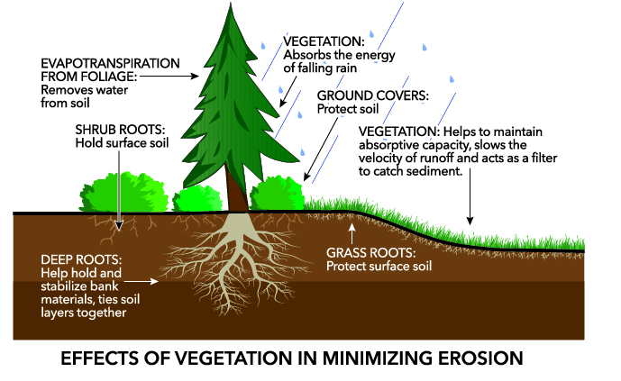

Prevention
Preventing soil erosion can be achieved through various methods. Planting native vegetation and trees helps anchor the soil with robust root systems. Employing contour farming and terracing on slopes reduces water flow and erosion. Using mulch or cover crops shields the soil from wind and water erosion, while erosion control structures like silt fences and check dams provide added protection.
Preventing soil erosion is crucial for maintaining healthy ecosystems and agricultural productivity. Several effective strategies can help mitigate this problem. One approach is to establish native vegetation and trees, which develop robust root systems that anchor the soil in place. On sloped terrain, contour farming and terracing techniques can be employed to slow down the flow of water and minimize erosion.
The use of mulch or cover crops shields the soil surface from wind and water erosion. Erosion control structures such as silt fences and check dams can be strategically placed in vulnerable areas.